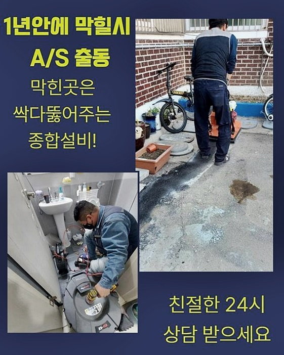
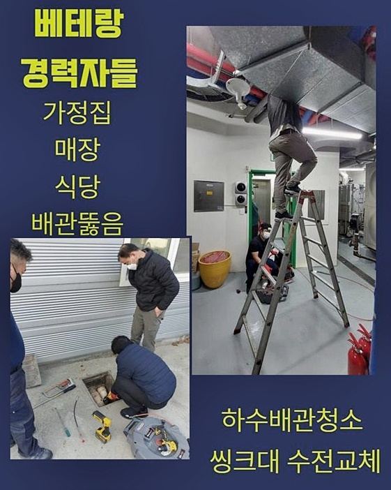
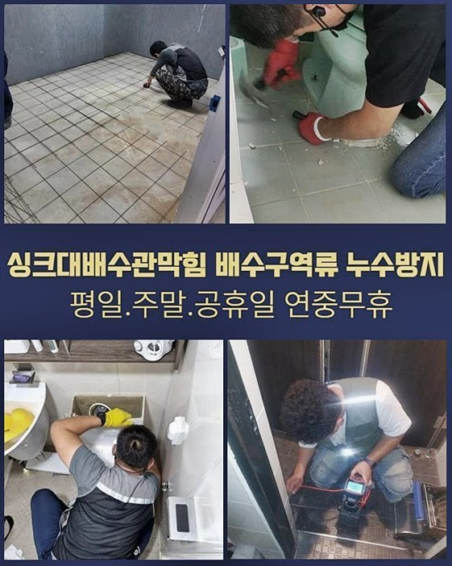
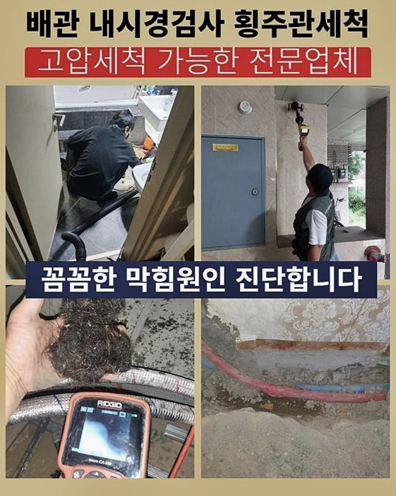
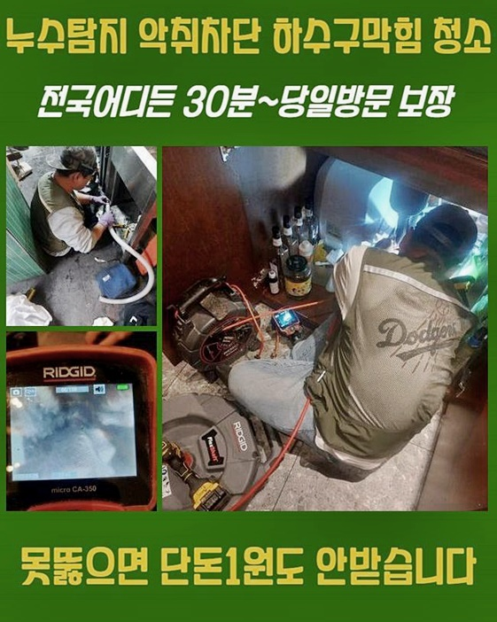
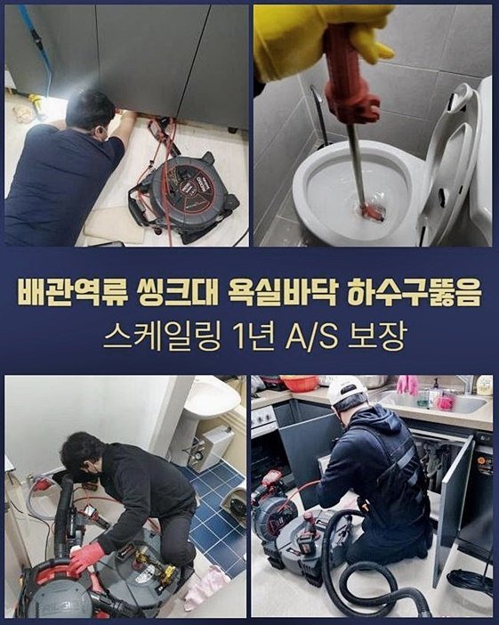
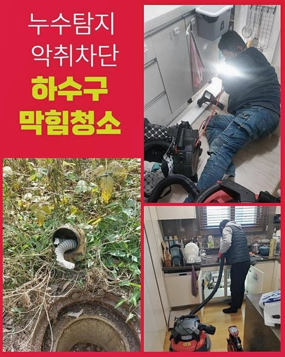

🏠 종로 공평동욕실막힘 권농동 배관내시경카메라 설비공사
용인시 처인구 배관막힘 전문 시공 후기

📋 작업 개요
- 위치: 용인시 처인구, 수원시 영통구, 화성시 동탄
- 서비스 유형: 배관막힘, 하수구청소, 고압세척, 내시경점검
- 작업 일시:
- 업체명: 하수구수사대 (010-5615-2118)
🔍 문제 상황
종로 공평동욕실막힘 권농동 배관내시경카메라 설비공사
하수구가 막히는것은 어디에서든 발생할수있으므로 신속한대처가 중요한데요
막힌원인과 상태에따라 알맞게 대처해야하고 현장장소에서 빠른조치를 통하여 하수구문제를 해결해드릴수있죠
고객님께서 원하시는대로 상세한대응을 바탕으로 좋은서비스로 제공하고있어요
하수도가막혀 곤란함을 겪고게신다면 편안하게 전화주세요! 최선을다하는 작업으로 뚫어드릴게요!
얼마전에 빌라에 거주하시던 고객께서 하수도막힘증세로 전화를하셨죠
이건물은 지어진지 10년가까이 흐르게된 건축물이었어요
화장실배수구에서 물이넘쳐 연락주셨다고 하셨는데요
저희들은 빠른대응을 토대로 의뢰자분의 편의들을 우선순위로 생각하고있으며 원하는 방문시간에 맞춰드려 작업해드리고 있답니다
평일주말 가리지않고 출동을 진행하여 막힘때문에 고생하셨던 부분들을 해소해드리려고 하고있죠
배수관에 어느만큼 역류하고있는지 살핀후 물을흘려내렸어요
결과를보았더니 하수구아래가 흥건한상태로 역류현상이 심각한것을 알수있었어요
하수도안을 살폈더니 슬러지들과 이물로인해 막힌것으로 예측했어요
배관이막히는건 갑작스럽게 일어나지않고 이용하게되면서 이물질들이 뒤엉키면서 막히는것이며 이러한점에대한 관리의필요성을 전달드렸답니다

🔎 원인 분석
💡 전문가 진단: 정밀 진단 장비를 사용하여 슬러지의 고착 여부를 판명하고 타격/세척 작업을 실시했습니다.
궁금증이 있으셨던 부분을 해소할수있었죠
이번장소에서는 이전에시도한 청소작업이 불충분한점이 원인이었어요
오염물이 축적되어서 물이정상적으로 흐르지못했어요
내시경장비로 상태를확인하면서 세척과정을 꼼꼼히 알려드렸는데요
오랜기간이 흘러서 남겨진 오염물의형태가 어떤지 확실하게 파악할수없어도 꼼꼼한작업으로 처리할수있었죠
재발문제가 발현되지않게끔 신경써서 확실한서비스로 안내해드릴것을 약속드릴게요!
내부오염물을 확실히 제거해줘야해요
날카로운 도구들을 활용해서 셀프조치로 해결해보고자하지만 확실히뚫는건 불가하고 내버려둔다면 되려문제를 심하게만들수 있답니다
그러므로 전문가에게 맡기셔서 안속이물질을 확실히 제거해주는게 중요하답니다
이러한현상은 조심스럽지 않게써서 발생하는데 싱크대에서 설거지할때 음식물잔해나 기름들이 배관속에 찌꺼기들로 쌓이게되면서 발생하는데요
하수도가막혀 의뢰주신 고객을 도와드리려고 조속히 방문드렸어요
검사를위해 전문장비들을 준비해서 조치에들어갔죠
오염물을 제거하는건 흡입장비나 분쇄장비를 활용하여 해결되고있죠
오염물이 쌓인곳은 고압청소를 진행해 처리하고 남아있는이물은 흡입기를 사용해서 빼내고있어요

🔧 작업 과정
깔끔하게 이물을 제거해내고 하수구를 깨끗한상태로 만드는데 최선을다해요
이런식으로 청소작업을 진행해서 곤란한점을 바로잡고 예방까지해드려요
저희업체의 작업시간대는 제한되지않아요
왜냐면 밤에도 막히는문제로 곤란할수있기 때문이죠
출동요청이 들어와서 전문기계를 모두챙기어 현장장소로 출동해보았죠
욕실쪽에 이동하자마자 심한악취를 동원하면서 심각한상태임을 알아차렸어요
우선물을 흘려보내보고 역류문제는 괜찮은지 세세하게 살핀후 물빠짐상태까지 체크해보았어요
저희들이 도착하기이전에 다른업체에서 작업하여 뚫지못했다고 하셨어요
따라서 우리를 부르셨다고 합니다
저희들의경우 출장금액에관해 청구드리지않기에 서비스가좋다고 말씀하셨습니다
뚫고나서도 추후관리까지 제공해주기에 흡족해하셨어요
하수도내부를 들여다보고자 내시경기계를 이용했어요
하수구상황을 들여다보니 잔여물질이 보이는걸 살펴볼수 있었는데요
효율적으로 처리해보고자 노력했으며 확실한결과물을 전달해볼수있었죠
배관내벽에 달라붙어있는 잔여물을 없애기위해 흡입장비를 통하여 오염물세척이 이루어졌어요
석션작업뒤 물빠짐을 관찰하기위하여 흘려보내보았지만 배수가깔끔히 이루어지지않는걸 살펴볼수있었죠
그래서 배관내시경을 활용해서 하수도안쪽을 세세히 관찰했는데요
관찰할때 카메라기계가 들어가지않는 지점이보여 세세하게대처를 취할수있었어요
샤프트기계를 통하여 고착이물까지 소거시켜보니 정상적인 배수상태로 이루어진것을 확인가능했어요
요청한시간에 알맞게 작업이 마무리되고 방지법까지 제시해드렸죠
고객님과의 소통을통해 확실한작업이 착수되었죠
막힘증세를 처음경험하셔서 혼란스럽고 원인이무엇인지 몰라서 답답할거에요


✅ 작업 완료
배관막힘으로인해 평소생활시 지장이갈경우 신속대처가 중요하므로 편하실때 저희업체로 의뢰하시면 됩니다
막힌하수구를 위하여 성의를다해서 작업하도록할게요
재차 말씀드리지만 막힘문제는 내버려두게되면 2차피해로 연결될수있으므로 문제를 발견한즉시 해결해보시는것이 좋겠습니다
60분이내로 내방이가능하니 전화를주시면 신속한서비스로 내방하겠습니다
분명하게 수리계획을 공개드리니 염려하지마세요
이것말고도 궁금증이 풀리지않으신게 있으시다면 전화하셔서 물어봐도되니 편안하게 전화를하시면 상세한상담으로 돕겠습니다




⚠️ 하수구 배관 막힘 예방 및 관리 가이드
- ✅ 머리카락, 비닐, 물티슈 등 물에 분해되지 않는 이물질은 절대 흘려보내지 마세요.
- ✅ 기름기 많은 식기는 설거지 전 키친타올로 먼저 기름때를 닦아내세요.
- ✅ 주기적으로 배수구에 뜨거운 물을 가득 부어주어 유지방 고착을 방지하세요.
- ✅ 작업 후 1년 이내 재발 시 무상 A/S 보증 서비스를 제공합니다.
💡 핵심 정리
- 확실한 장비 작업(내시경 점검 및 샤프트 스케일링)으로 원인을 뿌리 뽑습니다.
- 작업 후 1년 이내에 동일한 부위 재발 시 100% 무상 A/S 서비스를 보장합니다.
- 서울 · 경기 · 인천 전 지역에 24시간 언제든 긴급 출동할 수 있도록 항시 대기 중입니다.
❓ 자주 묻는 질문 (FAQ)
🚨 용인시 처인구 배관막힘 문제로 고민이신가요?
정확한 원인 진단과 확실한 시공으로 재발 없는 해결을 약속드립니다.
24시간 긴급 출동 | 서울 · 경기 · 인천 전지역 | 1년 내 재발 시 무상 A/S